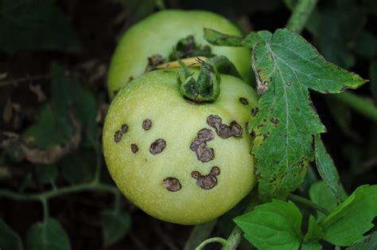

Episode 12 of 15 · July 22, 2025
Saving the fall harvest: how to fight diseases
We've worked too hard to lose our profits to diseases!
This week, we’re doing a small aside from Ghost House Tomatoes to talk about disease control.
The end of July is the time when diseases start to spread like crazy. And if we are not careful, we will lose control and they will ruin our fall harvest.
Fighting disease now is crucial: fall harvest represents 30% of the harvest.
Even more if you had blossom-drop during the summer. It could represent almost half of your total yields!
We have worked too hard to lose our profits to diseases!
Some diseases are extremely problematic. We will discuss how to mitigate Bacterial Spot, but the principles apply to several other diseases. Only the biopesticide may change.

Here’s a simple, practical action plan to help you contain the spread:
- Remove infected plants immediately.
If you spot plants with symptoms, pull them out right away. Place the plants in garbage bags before moving them out of the greenhouse to prevent contaminating other areas.
Removing several plants to save a whole greenhouse is worth it.
- Sanitize tools and hands frequently.
Clean your pruning tools with a bleach solution after every 5 plants. Have all staff sanitize their hands with alcohol when entering the greenhouse, and again every 5 plants while working.
- Clean all equipment
Sanitize trays, carts, and containers with bleach after each use. Shared tools and surfaces are common vectors for disease spread.
- Keep spare shoes only for the greenhouse
Have a second pair of shoes or boots that you leave in the greenhouse. Ask every team member to do the same. This way, you reduce the chances of spreading it across multiple tunnels.
- Spray preventatively with Serenade Opti
Apply Serenade Opti at 1.5 oz per gallon of water. Spray it over the entire tunnel every 5 days.
Note: this product suppresses Bacterial Spot spread, but does not cure it. It’s most effective as part of a prevention routine.
- Make it a routine
These steps may seem intense at first, but once they become part of your weekly workflow, they’re easy to manage.
- No greenhouse visits
Don’t let people who do not work in the greenhouse walk in the greenhouse. The risk of disease spreading is too high. If you want to show your beautiful plant to a client, show them through the roll-up or standing in the doorway.
Explain to them why; they will understand.
It’s not as hard as it seems, and it's worth it.
I know, this might feel like a lot of extra work. But in reality, it’s just a series of small routines that, once in place, become second nature.
This isn’t just about saving this fall’s harvest. Some diseases can stick around from season to season if they get out of control. A few simple precautions now can protect both your current crop and next year’s.
Cheers to your successful fall harvest!